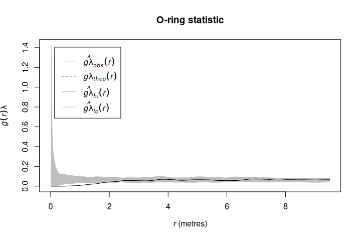
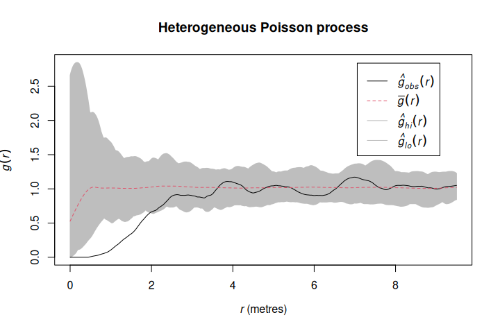
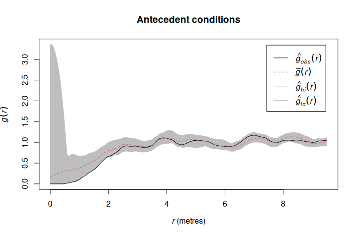
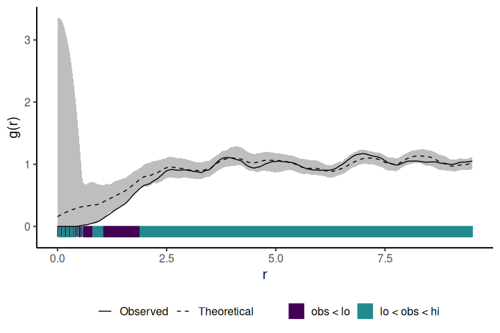

onpoint is a growing collection of helper functions mainly related to point pattern analysis and the spatstat package.
Installation
You can install the released version of onpoint from CRAN with:
install.packages("onpoint")You can install the development version of onpoint from Github with:
remotes::install_github("r-spatialecology/onpoint")
library(onpoint)
library(spatstat.core)
library(spatstat.data)
data(spruces)Summary functions
Currently, onpoint provides three second-order summary functions, namely Besag’s L-function centered to zero and the O-ring statistic and a fast estimation of the pair-correlation function.
Centering Besag’s L-function to zero has the advantage of an easier interpretation and plotting (Haase 1995). The function center_l_function() can either deal with a point pattern and calculated the centered L-function directly, or center the L-function afterwards it was calculating using spatstats Lest().
# calculate L-function
l_function <- Lest(spruces, correction = "Ripley")
# center L-function to zero
# center_l_function <- center_l_function(l_function)
l_function_centered <- center_l_function(spruces, correction = "Ripley")The O-ring statistic O(r) (Wiegand & Moloney 2004) can be calculated using estimate_o_ring(). Generally speaking, O(r) scales the pair correlation g(r) function with help of the intensity . One advantage of the O-ring statistic is that it can be interpreted as a neighborhood density because it is a probability density function (Wiegand & Moloney 2004).
o_ring <- estimate_o_ring(spruces)Of course, both summary functions can be used in combination with spatstat’s envelope() function.
oring_envelope <- envelope(spruces, fun = estimate_o_ring, nsim = 199, verbose = FALSE)
estimate_pcf_fast() estimates the pair-correlation function based on Ripley’s K-function, which is faster than estimation the pair-correlation function directly.
estimate_pcf_fast(spruces)
#> Function value object (class 'fv')
#> for the function r -> g(r)
#> .............................................................
#> Math.label Description
#> r r distance argument r
#> theo g[pois](r) theoretical Poisson value of g(r)
#> pcf g(r) estimate of g(r) by numerical differentiation
#> .............................................................
#> Default plot formula: .~r
#> where "." stands for 'pcf', 'theo'
#> Recommended range of argument r: [0, 9.5]
#> Available range of argument r: [0, 9.5]
#> Unit of length: 1 metreNull models
onpoint includes two functions to simulate null model patterns.
simulate_heterogenous_pattern() is a convienent wrapper around a few spatstat functions to straighforward simulate a heterogeneous Poisson process.
null_model_hetero <- simulate_heterogenous_pattern(spruces, nsim = 199)
hetero <- envelope(spruces, fun = pcf,
funargs = list(correction = "Ripley", divisor = "d"),
simulate = null_model_hetero, nsim = 199,
verbose = FALSE)
To simulate antecedent conditions in which only one pattern influences the other, but not the other way around (Wiegand & Moloney 2004, Velazquez et al. 2016), simulate_antecedent_conditions() can be used. This null model randomizes only one type of points (e.g. seedlings), while keeping the other type of points constant (e.g. mature trees) to check for associations between the two.
marks(spruces) <- ifelse(marks(spruces) > 0.3, yes = "adult", no = "seedling")
null_model_antecedent <- simulate_antecedent_conditions(spruces,
i = "seedling", j = "adult", nsim = 199)
antecedent <- envelope(spruces, fun = pcf,
funargs = list(correction = "Ripley", divisor = "d"),
simulate = null_model_antecedent, nsim = 199,
verbose = FALSE)
Various
To plot simulation envelopes using quantum plots (e.g. Esser et al. 2015), just pass an envelope object as input to plot_quantums().
plot_quantums(antecedent, ylab = "g(r)")
Contributing
Please note that the onpoint package is released with a Contributor Code of Conduct. By contributing to this project, you agree to abide by its terms.
To see how to contribute to this project, please see the Contributing guidelines.
References
Besag, J.E., 1977. Discussion on Dr. Ripley’s paper. Journal of the Royal Statistical Society. Series B (Methodological) 39, 193–195. https://doi.org/10.1111/j.2517-6161.1977.tb01616.x
Esser, D.S., Leveau, J.H.J., Meyer, K.M., Wiegand, K., 2015. Spatial scales of interactions among bacteria and between bacteria and the leaf surface. FEMS Microbiology Ecology 91, 1–13. https://doi.org/10.1093/femsec/fiu034
Haase, P., 1995. Spatial pattern analysis in ecology based on Ripley’s K-function: Introduction and methods of edge correction. Journal of Vegetation Science 6, 575–582. https://doi.org/10.2307/3236356
Velázquez, E., Martínez, I., Getzin, S., Moloney, K.A., Wiegand, T., 2016. An evaluation of the state of spatial point pattern analysis in ecology. Ecography 39, 1–14. https://doi.org/10.1111/ecog.01579
Wiegand, T., Moloney, K.A., 2004. Rings, circles, and null models for point pattern analysis in ecology. Oikos 104, 209–229. https://doi.org/10.1111/j.0030-1299.2004.12497.x